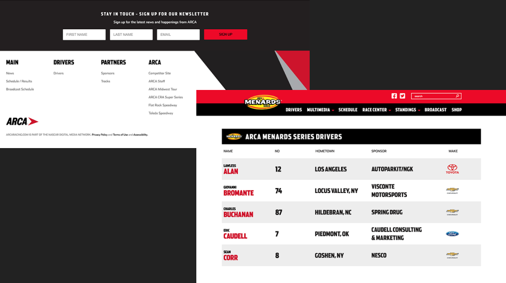
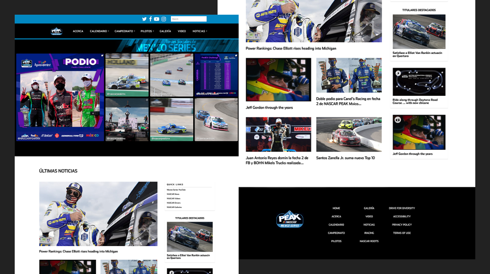
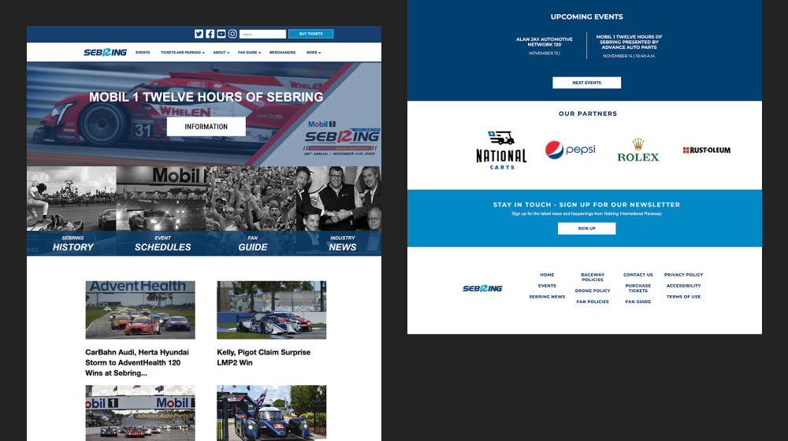

Sanctioning body for stock-car racing in North America, founded in 1948 in Daytona Beach, Florida, and
responsible for making stock-car racing a widely popular sport in the United States by the turn of the
21st
century.
I performed UI Developement and Design for NASCAR.com and IMSA updates, as well as creation of the
website sites for
their managed properties/clients, including NASCAR Mexico, Sebring Raceway, and ARCA Mendards.
Research

My work started with creative briefings with the product manager and assigned designer
that
informed me of the research findings, so that any designe modifications were informed as much as
possible.
I would submit design modification recommendations for review by the product, client, designer, client or
stakeholder. Once all parties signed off, development began.
Design

The designers I worked with were repurposed graphic designers, so guidance for working with web was very
imporatnt to ensure accessibility, usability, and industry standard practices were applied, ensuring
quality
of
the experience and interface.
We'd go through revisions until myself and the designer felt the designs were complete for product
manager,
client/stakeholder sign off.
Development

I utilized, modified, and added to their existing custom WordPress theme and plugins. The Websites I
created were assigned solely to me. I'd work withing their Atlasian system
(Jira) to update the project as it was completed. Tickets were separated by page or major
feature.
I worked in sync with the product owner, and designer to execute the client/propertie's while adhering to
proper practices to ensure quality of the product. If any issues were found during QA, the ticket would
be
re-assigned to me for bug fixes or requested modifications.
During major races and events, which usually occured on the weekend, only myself and one live ops team
member
would occupy the 8th floor of the NASCAR building in downtown Charlotte. We'd be on standby while we
monitored
the race so that I could correct any issues with the website, especially the live race tracking metrics.